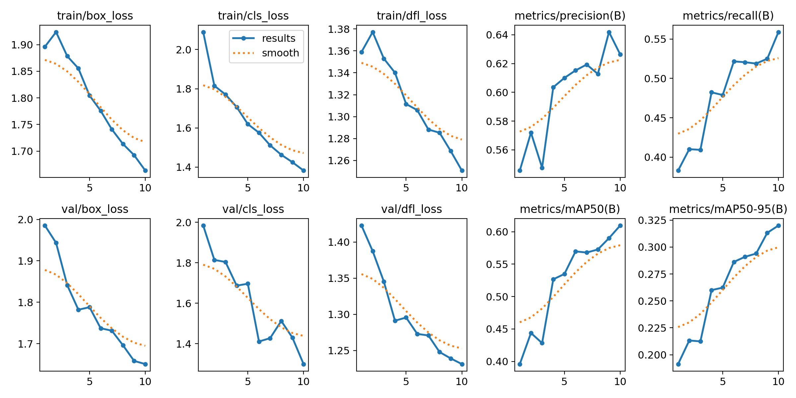

Tổng quan
Ung thư da hiện là một trong những loại ung thư phổ biến nhất trên toàn cầu, đặc biệt là Melanoma — dạng ung thư có khả năng di căn nhanh và tỷ lệ tử vong cao nếu không được phát hiện sớm. Trong thực tế lâm sàng, quá trình phát hiện tổn thương da thường phụ thuộc mạnh vào chuyên môn bác sĩ da liễu và các thiết bị soi da chuyên dụng.
Tuy nhiên, phần lớn các hệ thống AI hiện tại chỉ hoạt động tốt trên các ảnh soi da (dermoscopy) đã được crop sẵn quanh tổn thương (lesion-centric images), trong khi môi trường thực tế thường chứa rất nhiều thành phần gây nhiễu như lông, nếp gấp da, ánh sáng không đồng đều và nhiều tổn thương xuất hiện cùng lúc.
Báo cáo seminar này tập trung xây dựng một hệ thống phát hiện tổn thương da tự động bằng Deep Learning trên bộ dữ liệu iToBoS — một dataset được trích xuất từ ảnh chụp toàn thân 3D (3D Total Body Photography), iToBoS giữ nguyên ngữ cảnh rộng của vùng da xung quanh nhằm mô phỏng sát hơn điều kiện sàng lọc thực tế.
Nghiên cứu tiến hành benchmark nhiều kiến trúc Object Detection hiện đại như YOLOv8, YOLOv9, YOLOv10, RetinaNet và Faster R-CNN nhằm đánh giá sự đánh đổi giữa tốc độ, độ chính xác và khả năng phát hiện tổn thương nhỏ trong môi trường y tế phức tạp.
Các công cụ và công nghệ
- Ngôn ngữ lập trình: Python
- Framework / Thư viện: PyTorch, MMDetection, Ultralytics YOLO, OpenCV, NumPy, Pandas, Matplotlib
- Mô hình Deep Learning: YOLOv8, YOLOv9, YOLOv10, RetinaNet, Faster R-CNN
- Backbone được sử dụng: CSPDarknet, RegNetX-800MF, ResNet-50, ResNeXt-101
- Kỹ thuật huấn luyện: Focal Loss, Mixed Precision Training (AMP), Gradient Scaling, Multi-scale Training
- Phần cứng: NVIDIA RTX 3060 12GB, Kaggle Tesla P100/T4
Bộ dữ liệu iToBoS
Hệ thống được huấn luyện trên bộ dữ liệu iToBoS (Intelligent Total Body Scanner), một dataset công khai được xây dựng dành riêng cho bài toán phát hiện tổn thương da trong ảnh toàn thân 3D.
Bộ dữ liệu bao gồm hơn 16 900 ảnh vùng da độ phân giải cao được trích xuất từ hệ thống chụp ảnh toàn thân VECTRA WB360. Mỗi ảnh chứa ngữ cảnh rộng xung quanh tổn thương thay vì chỉ crop riêng lesion như các dataset dermoscopy truyền thống.
Dữ liệu được annotate dưới dạng bounding box cho tất cả các vùng nghi ngờ tổn thương nhằm phục vụ bài toán object detection. Bộ dữ liệu cũng chứa nhiều tình huống khó như:
- Nhiều tổn thương xuất hiện đồng thời trong một ảnh
- Ánh sáng và góc chụp không đồng đều
- Nhiễu từ lông, vải, nếp gấp da và vùng da lành
- Tổn thương nhỏ với ranh giới mờ
- Mất cân bằng dữ liệu nghiêm trọng giữa benign và malignant lesions (tổn thương lành tính và ác tính).
Tổng cộng dataset chứa khoảng 60 000 annotations với trung bình 4–5 lesions trên mỗi ảnh. Dữ liệu được chia train/ test theo bệnh nhân nhằm tránh hiện tượng data leakage trong quá trình đánh giá mô hình.
Kiến trúc mô hình Object Detection
Nghiên cứu tập trung đánh giá hai hướng tiếp cận chính trong bài toán object detection: One-stage detectors và Two-stage detectors.
Nhóm One-stage bao gồm các biến thể YOLOv8, YOLOv9 và YOLOv10. Các mô hình này trực tiếp dự đoán bounding box và class chỉ trong một lần suy luận, giúp đạt tốc độ inference rất cao và phù hợp cho các hệ thống thời gian thực.
Trong khi đó, nhóm Two-stage được xây dựng dựa trên Faster R-CNN. Kiến trúc này chia quá trình detection thành hai bước: đề xuất vùng nghi ngờ (Region Proposal) và tinh chỉnh phân loại/hộp giới hạn. Điều này giúp cải thiện đáng kể khả năng phát hiện các tổn thương nhỏ hoặc khó nhận biết.
Ngoài các mô hình baseline phổ biến, nhóm còn xây dựng nhiều custom architectures sử dụng các backbone mạnh như RegNetX-800MF và ResNeXt-101 kết hợp với:
- Feature Pyramid Network (FPN)
- Double Head R-CNN
- Focal Loss cho class imbalance
- ConvFC Bounding Box Head
Các kiến trúc này được thiết kế nhằm tối ưu hóa khả năng phát hiện tổn thương trong dữ liệu y tế phức tạp, nơi Recall và độ ổn định thường quan trọng hơn tốc độ suy luận thuần túy.
Quy trình huấn luyện
Các mô hình được huấn luyện trên cả môi trường local workstation và Kaggle GPU environment nhằm tối ưu thời gian thực nghiệm.
Quá trình huấn luyện sử dụng batch size từ 2–16 tùy theo kích thước mô hình và VRAM khả dụng. Kích thước ảnh đầu vào dao động từ 640 đến 1024 nhằm đánh giá ảnh hưởng của độ phân giải lên khả năng phát hiện tổn thương nhỏ.
Một số kỹ thuật tối ưu được áp dụng xuyên suốt quá trình training:
- Automatic Mixed Precision (AMP)
- Gradient Scaling
- Data Augmentation đa tỷ lệ
Các mô hình được đánh giá bằng bộ metric chuẩn COCO bao gồm: Precision, Recall, mAP@50 và mAP@50–95. Ngoài ra, Average Recall theo kích thước đối tượng cũng được phân tích nhằm đánh giá khả năng phát hiện lesion nhỏ.
Kết quả đạt được
Sau quá trình huấn luyện và benchmark trên bộ dữ liệu iToBoS, nghiên cứu cho thấy cả hai hướng tiếp cận One-stage và Two-stage Object Detection đều đạt được kết quả tích cực trong bài toán phát hiện tổn thương da.
Các mô hình YOLO thế hệ mới nổi bật nhờ tốc độ huấn luyện nhanh, khả năng hội tụ tốt và hiệu năng tổng thể khá cao trên dữ liệu ảnh toàn thân. Trong số đó, YOLOv9-Medium đạt kết quả cân bằng tốt nhất giữa Precision, Recall và mAP.

Các đường chỉ số huấn luyện và validation của YOLOv9-Medium trên bộ dữ liệu iToBoS.
- YOLOv9-Medium: đạt kết quả mAP@50–95 tốt nhất trong nhóm YOLO với Precision = 73.2%, Recall = 65.7%, mAP@50 = 74.7% và mAP@50–95 = 41.4%.
- YOLOv10-Large: đạt Precision cao nhất trong nhóm YOLO (75.5%), cho thấy khả năng giảm false positive khá hiệu quả.
- Custom Model 1 (Faster R-CNN + RegNetX-800MF + FPN + Focal Loss): đạt mAP@50 cao nhất = 76.2% và mAP@50–95 = 40.3%, cho thấy khả năng localization rất ổn định trong môi trường y tế phức tạp.
- Custom Model 2 (Faster R-CNN + ResNeXt-101 + Double Head R-CNN): đạt Recall cao nhất = 84.3%, giúp giảm nguy cơ bỏ sót tổn thương — yếu tố đặc biệt quan trọng trong bài toán sàng lọc ung thư da.
- Custom Model 3 (Faster R-CNN + ResNet-50 + ConvFC Bounding Box Head): đạt Recall = 73.5% và mAP@50 = 72.7%, đóng vai trò như một baseline two-stage detector ổn định với chi phí huấn luyện thấp hơn.
Kết quả thực nghiệm cho thấy YOLO phù hợp cho các hệ thống cần tốc độ suy luận cao hoặc triển khai thời gian thực, trong khi Faster R-CNN lại cho hiệu suất ổn định hơn khi xử lý các tổn thương nhỏ và dữ liệu có độ nhiễu cao.
| Mô hình | Precision | Recall | mAP@50 | mAP@50–95 |
|---|---|---|---|---|
| YOLOv8-Small | 0.661 | 0.602 | 0.665 | 0.362 |
| YOLOv9-Medium | 0.732 | 0.657 | 0.747 | 0.414 |
| YOLOv8-Large | 0.718 | 0.633 | 0.725 | 0.401 |
| YOLOv10-Small | 0.729 | 0.635 | 0.728 | 0.399 |
| YOLOv10-Medium | 0.665 | 0.598 | 0.662 | 0.352 |
| YOLOv10-Large | 0.755 | 0.602 | 0.717 | 0.395 |
| Kiến trúc | Precision | Recall | mAP@50 | mAP@50–95 |
|---|---|---|---|---|
| RegNetX + FPN + Focal | 0.608 | 0.777 | 0.762 | 0.403 |
| ResNeXt-101 + Double Head | 0.446 | 0.843 | 0.735 | 0.332 |
| ResNet50 + ConvFC | 0.445 | 0.735 | 0.727 | 0.328 |
Thách thức và giải pháp
- Class imbalance nghiêm trọng: Phần lớn tổn thương trong dataset là benign lesions (tổn thương lành tính) khiến mô hình dễ bias về background. Vấn đề này được giải quyết bằng Focal Loss và điều chỉnh sampling strategy.
- Tổn thương kích thước nhỏ: Nhiều lesion chỉ chiếm diện tích rất nhỏ trong ảnh toàn thân. Việc tăng img_size lên 1024 giúp cải thiện đáng kể khả năng localization.
- Nhiễu từ môi trường thực tế: Lông, nếp gấp da, ánh sáng và quần áo thường bị mô hình nhầm với tổn thương. Data augmentation và backbone mạnh hơn giúp cải thiện tính tổng quát hóa.
- Giới hạn tài nguyên GPU: Các mô hình large-scale như ResNeXt-101 và YOLOv10-Large tiêu tốn rất nhiều VRAM. AMP và huấn luyện trên Kaggle GPU được sử dụng để giảm tải bộ nhớ.
Hướng phát triển
Trong tương lai, nghiên cứu có thể được mở rộng theo nhiều hướng nhằm nâng cao hiệu năng và khả năng ứng dụng thực tế:
- Áp dụng Vision Transformer hoặc Swin Transformer cho object detection.
- Xây dựng ensemble models giữa YOLO và Faster R-CNN.
- Tối ưu hyperparameter bằng Optuna hoặc Bayesian Optimization.
- Tích hợp Explainable AI để hỗ trợ bác sĩ giải thích dự đoán.
- Mở rộng dataset cho nhiều skin tone khác nhau nhằm tăng khả năng tổng quát hóa.
- Xây dựng hệ thống CAD hỗ trợ sàng lọc ung thư da trong môi trường cộng đồng.